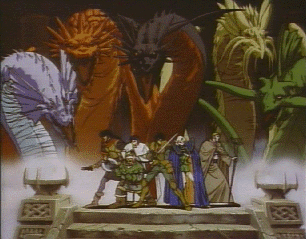

Record of Lodoss War

From the Anime Pocket Guide:
Cast:
Pern (the warrior) ................... Takeshi Kusao
Deedlit (the elf) .......................... Yumi Touma
Eto (the cleric) ................. Kappei Yamaguchi
Slayn (the magician) ................ Hideyuki Tanaka
Woodchuck (the thief) .................... Norio Wakamoto
King Faan .................................... Osamu Saka
Queen Fianna ................................. Rei Sakuma
Lord Kashew .............................. Shuuichi Ikeda
Ashram ..................................... Akira Kamiya
Olson ........................................ Sho Hayami
Beldo ...................................... Taroh Ishida
King of Kanon .............................. Nobuo Tobita
Karla/Reilia ......................... Yoshiko Sakakibara
Bugnard .................................... Takeshi Aono
Shadam ..................................... Katsuji Mori
Seeris .................................. Minami Takayama
Pirotase ................................ Sakiko Tamagawa
Riara ....................................... Rica Fukami
Jebra ...................................... Tessho Genda
Narrator .................................. Kenichi Ogata
Narrator .................................. Ichirou Nagai
Description:
Long ago, a titanic war ended between 2 gods which split the
land into two islands. One of them is the island of Lodoss. The
peace on Lodoss is being disrupted, and Pern decides to find out
why. Almost by accident, he forms a band to help on his quest.
The band consists of: an elf, a dwarf, a cleric, a wizard, a
thief, and a warrior (Pern). The OAV series follows their
adventures. This series has a very heavy Role-Playing-Game(RPG)
influence to it. Note that there seems to be a break in the
story between parts 8 and 9.
Other Resources
Anime Video Game Resource Center © 1998 by Luis A. Cruz